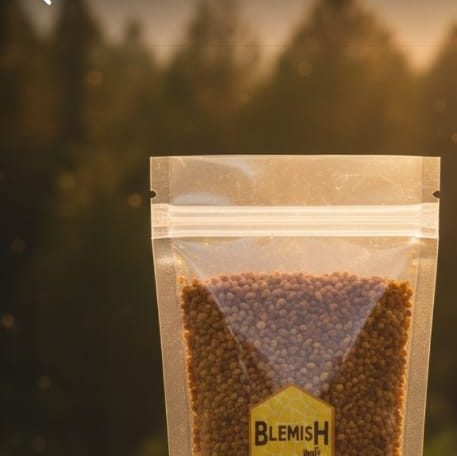

← Volver a Especias · Especias

Polen
Presentación de 150 g · Listo para consumir
$25.000 COP
El polen apícola está formado por pequeños gránulos de polen de las flores que recolectan las abejas. Esta presentación de 150 g está lista para consumir y puede incorporarse a distintas preparaciones de tu día a día.
Características
- Producto: polen apícola en gránulos
- Presentación: 150 g
- Listo para consumir
- Precio por presentación: $25.000 COP
Modo de uso
- Añádelo al yogur o a la avena.
- Incorpóralo a jugos o batidos.
- Combínalo con miel para acompañar tus preparaciones.
Si tienes antecedentes de alergia al polen o a productos apícolas, consulta con un profesional de la salud antes de consumirlo.